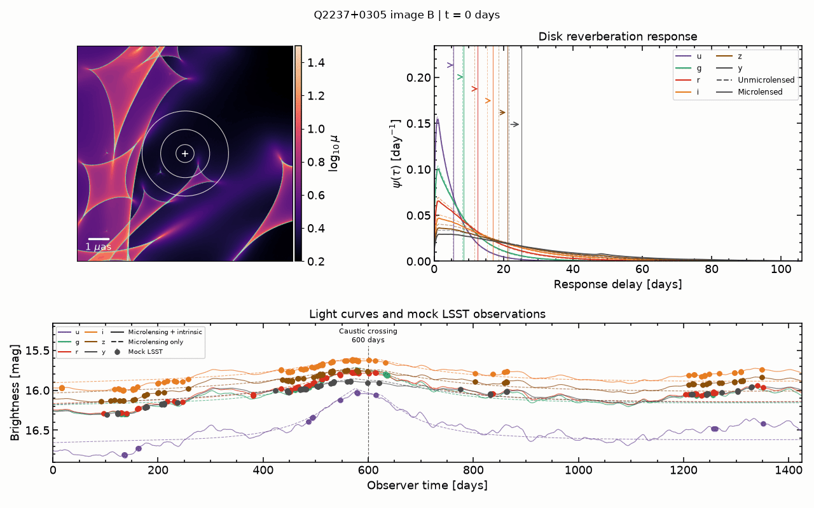
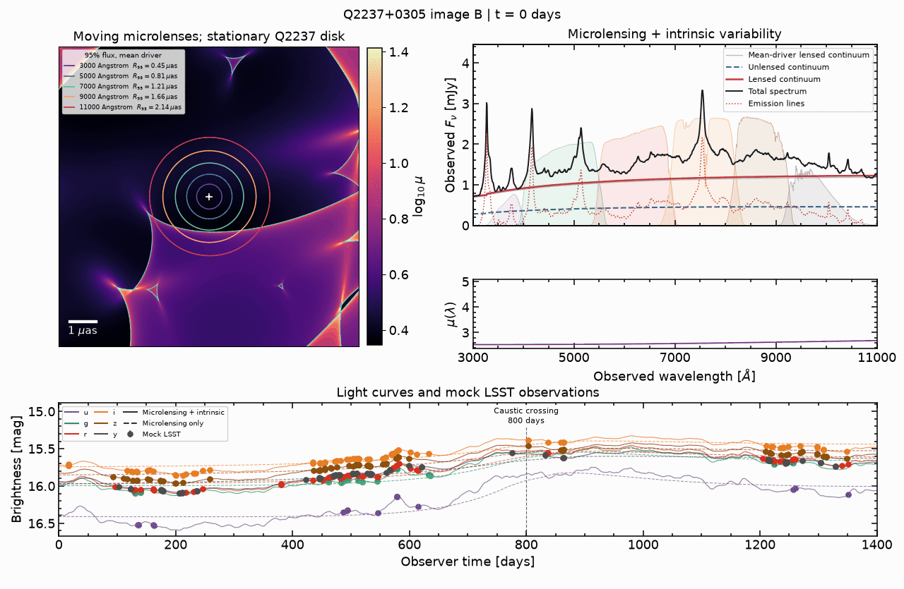
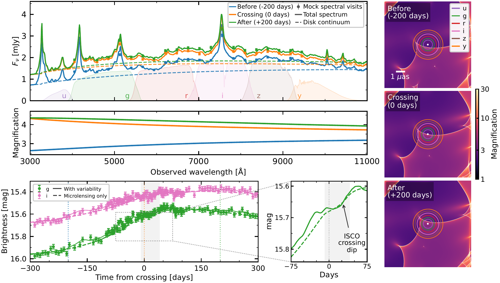

Quasar accretion disks
Reverberation measures how an accretion disk responds to changing illumination. Microlensing magnifies different parts of the disk. Together, they can reveal its size, temperature structure, and inner-disk structure.
Astrophysics & machine learning
Postdoctoral Researcher
Stony Brook University
I use the changing light of quasars to study black holes, the galaxies that lens them, and the expansion of the Universe.
Working with Simon Birrer, I combine dynamical microlensing simulations with machine learning to turn irregular light curves into measurements and event forecasts.

01 / Research
I build physical simulators and inference methods to connect time-domain observations to the systems that produce them.
 View figure
View figure
Reverberation measures how an accretion disk responds to changing illumination. Microlensing magnifies different parts of the disk. Together, they can reveal its size, temperature structure, and inner-disk structure.
Stars move, so the magnification pattern evolves. I developed Microcaustics to make these simulations practical on GPUs and study how stellar motion and mass distributions affect inference.
Strongly lensed quasars probe compact matter in distant galaxies and provide time delays for measuring cosmic expansion. My goal is joint time-series inference that accounts for microlensing rather than treating it only as a nuisance.
Machine learning for inference
My latent stochastic differential equation (SDE) framework reconstructs irregular quasar light curves and infers black-hole and accretion-disk properties. It combines learned variability with a physical model of disk reprocessing.
Current work extends this approach to simulation-based inference with a pretrained Transformer encoder and tests it on observed ZTF and DES quasars. For lensed systems, I am developing methods to identify past crossings and forecast future high-magnification events for follow-up.
Read the latent-SDE paper View figure
View figure
 View figure
View figure
The science in motion
These physical simulations show how evolving caustics change a quasar’s spectrum and reverberation response. Play either animation to follow an event.


Animations load only when played. The two examples use different stellar realizations.
From forecasts to observations
Event forecasts can guide high-cadence multiband and spectroscopic follow-up, catching the fine structure of a crossing as a caustic scans the accretion disk.

View figure02 / Publications
The Astrophysical Journal · 988, 59
A generative model that embeds accretion-disk physics in learned quasar variability.
The Astrophysical Journal · 981, 61
Forecasting microlensing events from sparse, survey-like light curves to guide follow-up observations.
Monthly Notices of the Royal Astronomical Society · 539, 1269
The Astrophysical Journal · 978, 54
The Astrophysical Journal · 965, 104
Learning continuous-time quasar variability from irregular observations.
Monthly Notices of the Royal Astronomical Society · 532, 2248
Using strong-lens images to constrain the small-scale structure of dark matter.
Monthly Notices of the Royal Astronomical Society · 531, 1095
Probing the inner disk through caustic-crossing structure, including observed Q2237 events.
Listed separately from refereed publications. Public paper links will be added when available.
J. Fagin et al. · Manuscript · Software available ↗
J. Fagin et al. · In preparation
J. Fagin et al. · In preparation
J. Chan, J. Fagin, M. O’Dowd & S. Miskiewicz · Submitted to A&A
03 / Scientific software
Open code, physical models, and worked examples for time-domain astronomy.
Python · PyTorch · Triton
A GPU-accelerated simulator for dynamical gravitational microlensing of extended, evolving sources. Moving stars, stellar mass distributions, relativistic disks, spectra, and caustic labels can be combined in one light-curve workflow.
Physics-embedded latent SDEs for joint modeling of quasar variability and accretion-disk reprocessing.
Reconstructing irregular quasar light curves and inferring black-hole properties with neural stochastic dynamics.
Recurrent neural networks for predicting microlensing high-magnification events in LSST-like monitoring.
04 / Background
2026–present
Postdoctoral Researcher in Astrophysics and Machine Learning
Working with Simon Birrer
2025–2026
Postdoctoral Researcher
Working with Matthew O’Dowd
2020–2025
Ph.D. in Physics
Thesis on machine learning for quasar variability and strong lensing ↗
2016–2020
B.S. in Physics & B.S. in Mathematics
I co-lead a quasar-variability task force in the Rubin AGN Science Collaboration and participate in the Dark Energy and Strong Lensing Science Collaborations. I am also a member of the FutureLens Collaboration.
My research direction is to connect survey monitoring to calibrated parameter inference, light-curve reconstruction, and timely alerts for multiband and spectroscopic follow-up.
I taught nine undergraduate physics laboratory sections at CUNY Lehman College in the Bronx, covering mechanics, electromagnetism, and sound.
I develop open scientific-software tutorials and am interested in making time-series inference, GPU computing, and machine learning more accessible to astronomy students.
My latent-SDE work received a spotlight presentation at the ICLR 2023 Physics for Machine Learning Workshop. I have presented research at astronomy and machine-learning meetings, including Rubin science-collaboration meetings.
Let’s connect
I’m interested in quasar physics, strong lensing, time-domain surveys, and machine learning for physical science.
Department of Physics and Astronomy
Stony Brook University